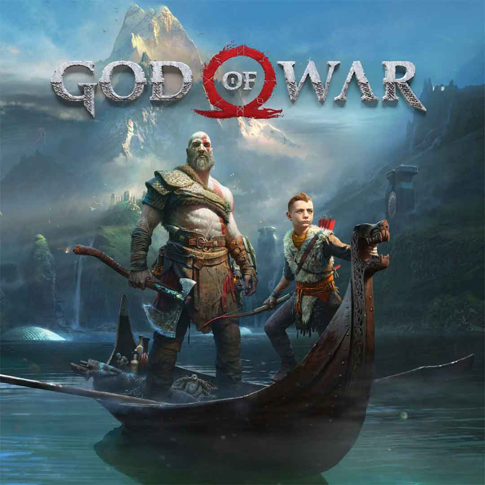
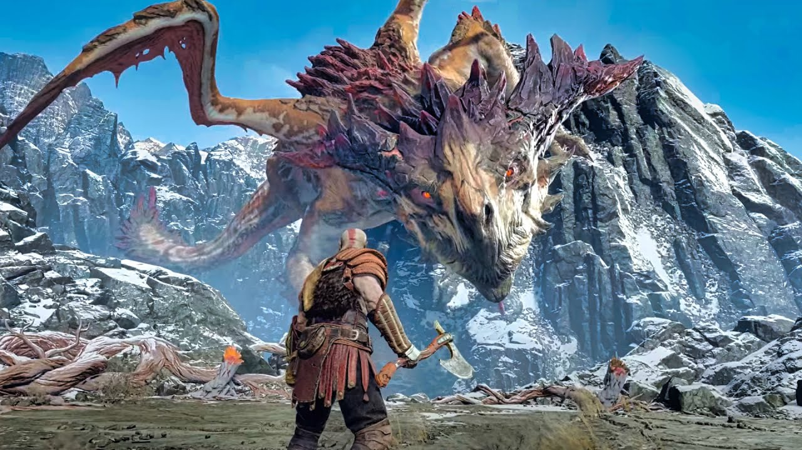

God of War, Santa Monica Studio tarafından geliştirilen 2018 yapımı aksiyon-macera oyunudur. Kronolojik olarak yedinci video oyunudur. Oyun geri kalan altı oyundan her bakımdan farklı olarak adlandırılabilir. İskandinav mitolojisinde geçen oyun, Kratos ve oğlu Atreus'un ölen annesinin vasiyeti olan diyarların en yüksek yerinden küllerini dökme amacıyla çıktıkları maceraları anlatır. Oyunun ana karakteri Kratos'u Christopher Judge, oğlu Atreus'u Sunny Suljic seslendirmiştir. Yönetmeni Cory Barlog' tur. 6 Aralık 2018'de The Game Awards 2018 etkinliği kapsamında jürilerin oyu ile Yılın Oyunu seçilmiştir.

Bu eksiksiz koleksiyon listeleri kupa almak veya ana alanlarda olmayan koleksiyonları bulmak için kullanışlıdır.
Odin'in Kuzgunları - 51 Odin'in Kuzgunları baltanızla yok etmeniz gereken yeşil kuşlardır.
Eserler - çoğu bölgede, para toplamak ve satmak için bir dizi eser (nehir Geçidindeki Sihir yüzleri veya Alfheim'daki savaş ganimetleri koleksiyonu gibi) vardır.
Lore Locations- dünyayı daha iyi anlamak için lore off of stones'u okuyun.
Hazine haritaları-tahmin ettiğiniz hazineyi bulmak için bu bulmacaları çözün. Haritanın konumlarının yanı sıra çözümleri ve ödülleri de ekledik.
Dil şifreleri - Niflheim dil şifreleri ve Muspelheim dil şifreleri, dünyadaki ek dilleri okumanıza izin verir.
Valkyries- bu zorlu isteğe bağlı patronlar onları yenmek için büyük ödüller veriyor.

God of War'da oyun içerisinde kullanabileceğiniz 2 adet silah verilmiştir. Bunlardan biri Leviathan baltası, diğeri ise önceki oyunlardan tanıdığımız Blade of chaos'tur, ayrıcalıklı olarak oyunda çıplak elde mücadele içerisinde kullanılabilmektedir.